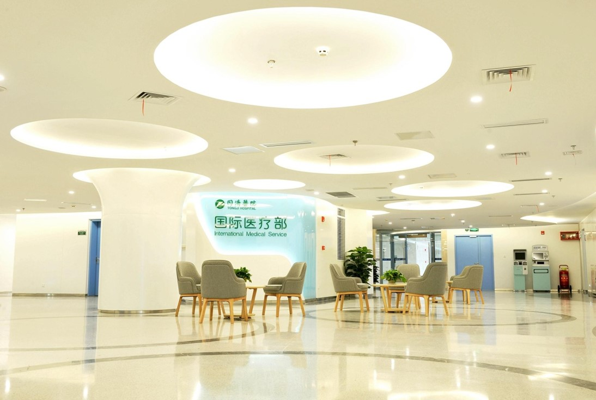

Hospital matching
Specialty capability, city and current access considered together.
HUAYIAN CARE TRIP · CROSS-BORDER MEDICAL COORDINATION
Starting with an online consultation, we help international patients choose the right hospital, obtain a treatment plan and coordinate every step of care in China.
Why China
Why HUAYIAN
Specialty capability, city and current access considered together.
Records, specialist questions, appointments and interpretation.
Visa documents, arrival, accommodation and admission.
Discharge records, medication guidance and follow-up.
Your next step
Start here
Your care journey
Share your care needs and preferred timing.

Records are organized, translated and sent for clinical review.

Confirm the hospital, schedule and estimated cost.
Visa support, flights, transfer, accommodation and admission.
Medical interpretation and daily progress coordination.
Discharge records, medication guidance and follow-up.
Hospital matching
Select a specialty to view five hospital references.
Start consultation
Begin with a short message. Medical records can follow.
Yes. The hospital confirms clinical suitability and availability after reviewing the submitted information.
Timing varies by specialty and record completeness. Your coordinator confirms the expected response time.
A case estimate follows specialist review. Final charges depend on the treatment delivered.
Yes. Companion visa materials, airport transfer and accommodation can be coordinated with your care journey.